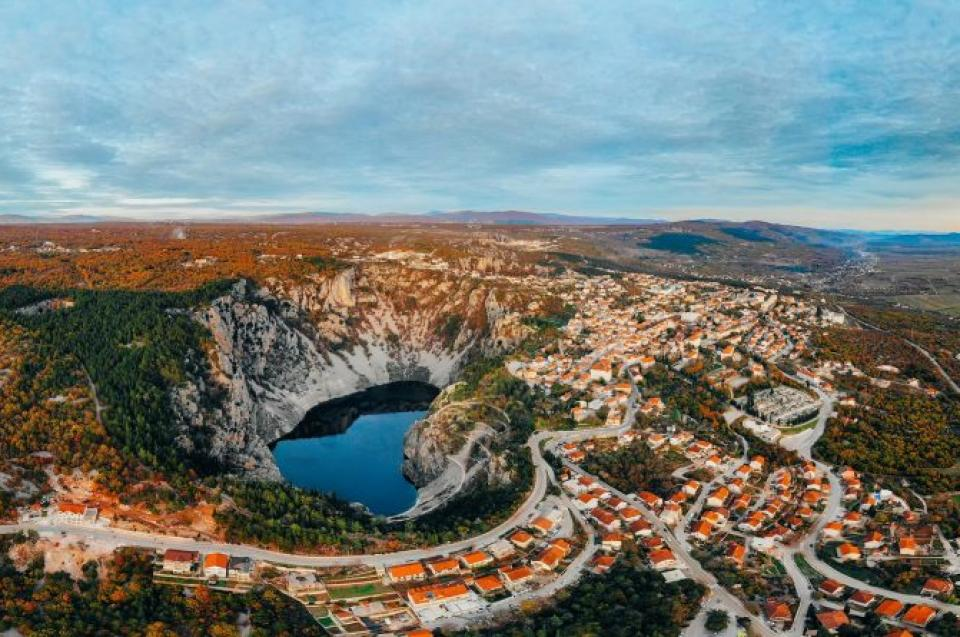

Imotski je grad u Hrvatskoj, središnjoj Dalmaciji te administrativno pripada Splitsko-dalmatinskoj županiji. Imotski u Hrvatskoj zovu nazivom "Hrvatski Jeruzalem" jer izgleda kao stara gradska jezgra Jeruzalema. Imotski je postao i poznato odrediste za turiste ovih godina i 2019. godine ga je posjetilo 40000 turista.
